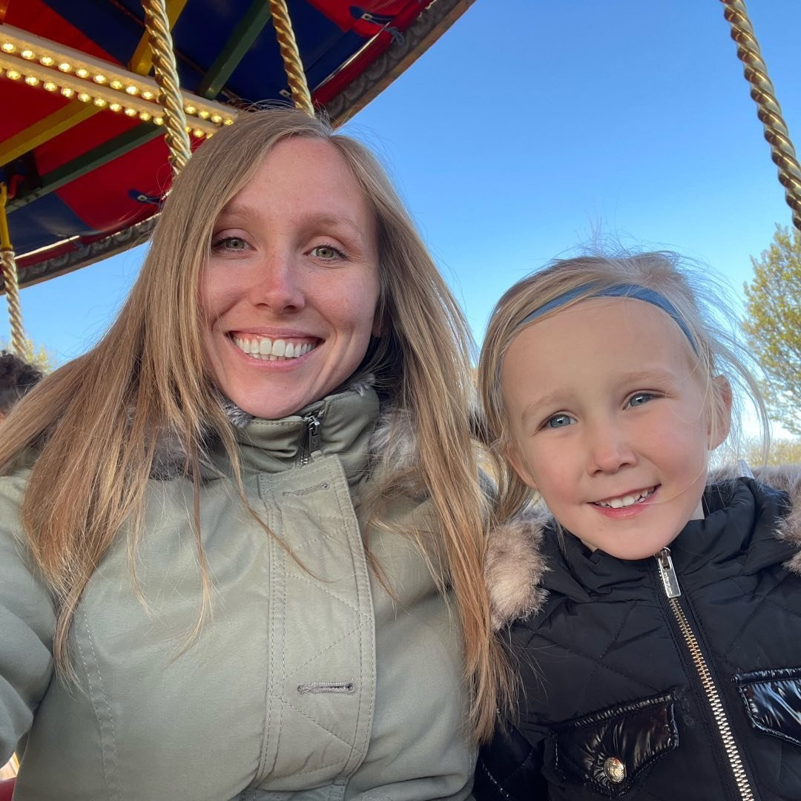

My Resume
Charlotté Higton

Summary
3D Artist, Animator and Registered Midwife in the UK.
Education
BSc Midwifery (2020-2023)
MA Games (2017-2018)
BA Animation (2014-2017)
BTEC Level 3 Art and Design (2010-2012)
GCSE's (2008-2010)
Work Experience
Phlebotomist - Norfolk and Norwich University Hospital
- Completing venepuncture using ANTT
- Labelling samples and delivering to laboratory
- Infection control
Freelance 3D Artist
- Design and generate 3D assets
- Rig 3D assets for animation
- Animate 3D assets
Skills
- Communication
- Proficient in Maya, Cinema 4D, ZBrush and Marmoset Toolbag
- Team work
- Holistic Midwifery Skills
- High risk Obstetric Care
Interests
Contact